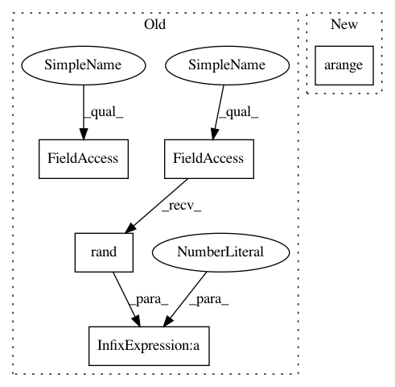

45f06d55a1cfe2b1a7e6ae70f262b6ea3dcd8f8b,dipy/core/tests/test_geometry.py,,test_invert_transform,#,43
Before Change
@parametric
def test_invert_transform():
n = 100
theta = np.random.rand(n) * np.pi // Limited to 0,pi
phi = np.random.rand(n) * 2 * np.pi // Limited to 0,2pi
x, y, z = sphere2cart(1, theta, phi) // Let"s assume they"re all unit vectors
r, new_theta, new_phi = cart2sphere(x, y, z) // Transform back
After Change
def test_invert_transform():
n = 100.
theta = np.arange(n)/n * np.pi // Limited to 0,pi
phi = (np.arange(n)/n - .5) * 2 * np.pi // Limited to 0,2pi
x, y, z = sphere2cart(1, theta, phi) // Let"s assume they"re all unit vectors
r, new_theta, new_phi = cart2sphere(x, y, z) // Transform back
In pattern: SUPERPATTERN
Frequency: 3
Non-data size: 5
Instances
Project Name: nipy/dipy
Commit Name: 45f06d55a1cfe2b1a7e6ae70f262b6ea3dcd8f8b
Time: 2011-10-10
Author: Bago.Amirbekian@ucsf.edu
File Name: dipy/core/tests/test_geometry.py
Class Name:
Method Name: test_invert_transform
Project Name: mil-tokyo/webdnn
Commit Name: e924fb0abeec6964a320eec7c99c43effa041ecb
Time: 2017-08-24
Author: y.kikura@gmail.com
File Name: test/runtime/operators_test/elementwise_add_test.py
Class Name:
Method Name: template
Project Name: pandas-dev/pandas
Commit Name: 8051248bedd7387babba24c5756c286987c42eb1
Time: 2021-02-21
Author: jbrockmendel@gmail.com
File Name: asv_bench/benchmarks/hash_functions.py
Class Name:
Method Name: setup
Project Name: nipy/dipy
Commit Name: 45f06d55a1cfe2b1a7e6ae70f262b6ea3dcd8f8b
Time: 2011-10-10
Author: Bago.Amirbekian@ucsf.edu
File Name: dipy/core/tests/test_geometry.py
Class Name:
Method Name: test_invert_transform